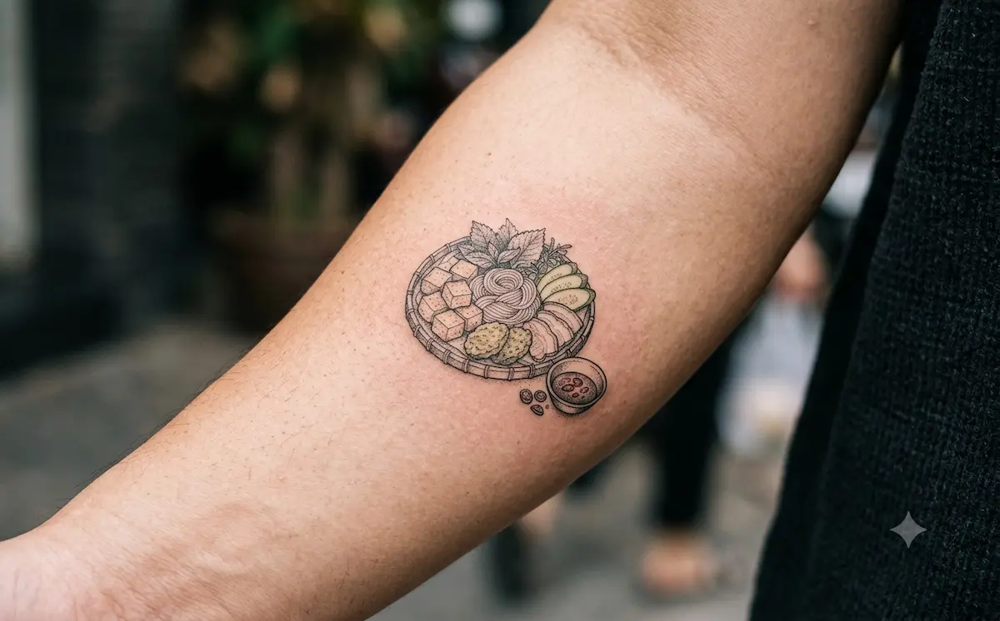

A Tray of Surprises on a Plastic Stool
Find a low stool in a narrow Old Quarter alley. A server sets down a bamboo tray lined with banana leaf. On it you will see pressed white rice noodles, golden fried tofu, juicy boiled pork and crispy spring rolls. Beside it sits a small bowl of pinkish-purple dipping sauce.
That sauce is mắm tôm, fermented shrimp paste. It is bold and strong, and it is the heart of the dish.
This is bun dau mam tom, one of Hanoi’s most beloved everyday meals. It is simple, social and made for sharing.
What Is on the Tray?
A full tray usually includes:
- Bún lá: soft white rice noodle blocks
- Đậu rán: tofu fried until crisp outside and soft inside
- Boiled pork (thịt luộc), often with a bit of chewy cartilage
- Chả cốm: young green rice patties
- Nem rán: fried spring rolls
- Dồi and lòng: sausage and offal. Skip these if you prefer.
- Fresh herbs and cucumber
Not Sure About Shrimp Paste?
Many visitors find the smell strong at first. That is normal, and Hanoi locals know it too. Here is how to enjoy it:
- Start with a tiny dip. Add more only if you like it.
- Ask for a squeeze of kumquat (quất). It brightens the sauce and softens the smell.
- Wrap or dip everything. The tofu is the best partner.
- Not ready? Try the tray with a milder dipping sauce.
4 Bun Dau Spots Near the Old Quarter
Prices are per portion in VND and approximate. Hours can change, so check before you go.
1. Bún Đậu Trung Hương – 49 Phất Lộc
7:00–21:00 | 20,000–50,000 VND
This spot is right in Hoan Kiem, close to Old Quarter streets. The shrimp paste comes from Thanh Hóa. It has a pink color and a rich but not overpowering taste. The tofu is Làng Mơ style: crisp outside, soft and nutty inside. Add pork, chả cốm or sausage as you like.
Best for: first-timers who want a balanced shrimp paste.

2. Bún Đậu Hàng Khay – End of Alley 29 Hàng Khay
7:00–21:00 | 45,000–65,000 VND
A well-known name for travelers near Hoan Kiem Lake. People praise the stuffed sausage, the well-cooked spring rolls and a shrimp paste that is mixed to a gentle taste. A little kumquat on top makes it much easier to enjoy.
Best for: visitors who want a classic tray in the center of the city.

3. Bún Đậu Gốc Đa Ngõ Gạch – 4 Ngõ Gạch
10:00–21:00 | 25,000–50,000 VND
A sidewalk bun dau spot in the Old Quarter that is tidy and popular with young locals. The tray comes with hot tofu, chewy green rice patties, sausage, spring rolls and boiled pork, with a well-balanced shrimp paste.
Best for: a real street-side experience with a local crowd.

4. Bún Đậu Đông Thái – 11 Đông Thái
11:00–14:00 | 30,000–50,000 VND
Open only at lunch. The kitchen starts frying your tofu when you order, so it arrives hot, golden and rich. The shrimp paste is moderately strong, and the toppings are plentiful.
Best for: a fresh, hot lunch at a fair price.

Quick Tips for Eating Bun Dau
- Go in a group. One big tray is perfect for 2–3 people.
- Eat it fresh. Fried tofu is best straight from the pan.
- Try lunchtime. Some spots, like Đông Thái, only open for a few hours.
- Say what you don’t eat. Ask for no offal if you are unsure.
- Cool down. Order a fresh kumquat or lime drink afterward.
Keep Your Hanoi Memories Forever: A Tattoo from Mr Tattoo Hanoi Studio
Some memories are strong, like a bite of crispy tofu dipped into a sauce you were not sure about. You laughed, your friends laughed and you said, “Okay, that was actually good.”
That is Hanoi: surprising, bold and unforgettable.

At Mr Tattoo Hanoi Studio, right in the heart of the Old Quarter, we help travelers turn moments like that into small, personal keepsakes.
Ideas inspired by bun dau:
- A bamboo tray with banana leaf in clean fine-line
- A golden tofu cube with a tiny dipping bowl
- Chopsticks and a kumquat as a playful travel symbol
- A conical hat or Hanoi skyline with your travel date
What we offer:
- Custom, original designs made for you
- Traditional Vietnamese motifs and Asian-inspired art
- Fine-line and blackwork styles
- Travel memory tattoos
Small tattoos start from just $10.
Book Your Tattoo
- Website: mrtattoo.vn (see our contact page)
- Hotline / WhatsApp: +84 377 616 886
Message us your idea, and we will help you design something you will love.
Eat boldly. Explore deeply. Take Hanoi home with you.